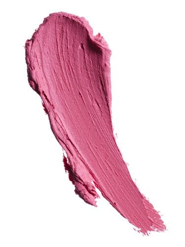

사진 이 책에서는 여자의 관점에서 바라본 연애를 다루고 있다. 이때 주인공이 여자를 빼고 흑백으로 표현한다. 이때 여자 주인공만 색이 있는데 핑크색으로 표현된다. 이를 보면 여자는 핑크라는 고정관념이 만들어 냈다.
 정치적 관점 여자는 핑크, 남자는 파랑이라는 인식이 많다. 이것은 과거부터 내려오는 고정관념이다. 이 책뿐만 아니라 많은 상품과 광고에서 여자와 남자를 구분하는 색으로 검색하기 싫어 물어보는 사람과 파랑을 사용하고 있다.
나의 생각 이 책에서는 굳이 여자 주인공을 강조할 때 핑크색으로 표현했어야 하는지에 대한 의문이 들었다. 꼭 핑크색이 아니더라도 강조할 수 있는 다른 색이 많은데 그저 고정관념 때문에 생긴 문제라고 생각했다.